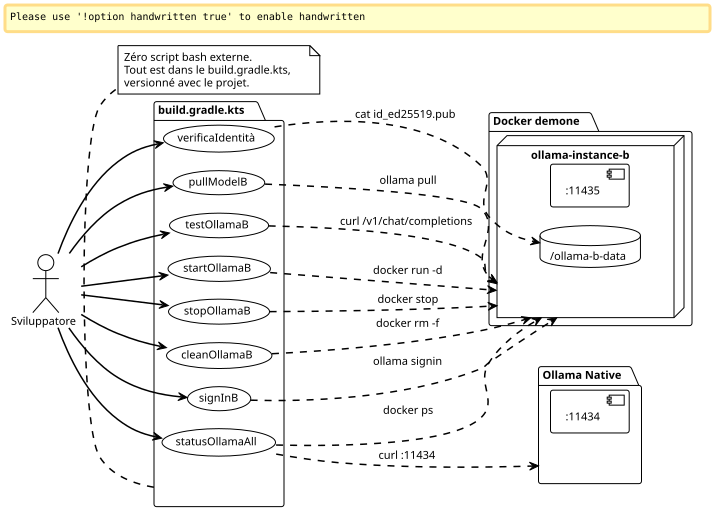

Plugin Gradle Casa per Pilotare Due Istanze Ollama Pro in Parallelo
Publié le 08 May 2026
- Introduzione
- Perché Gradle per l’Infra ?
- Il build.gradle.kts completo
- Anatomia delle attività chiave
- Bake (generate) the site jbake -b
- Bake and serve locally jbake -b -s
- Bake and watch for changes jbake -b --reset
- Specify source and destination jbake source_folder output_folder
- Clear the output directory before baking jbake -b . output --resetconservato. L’identità SSH sopravvive alla pulizia. Al prossimo`startOllamaB`, le stesse chiavi verranno riutilizzate — non c’è bisogno di rifare il sign-in né di re-registrare la Device Key.
Perché digitare i comandi docker a mano quando si può incapsulare tutto in task Gradle? Ecco come ho industrializzato la mia configurazione dual-Ollama Pro senza script shell esterni. Avvio, arresto, identità, sign-in, pull — tutto passa per`./gradlew`.
Introduzione
Nell’articolo precedente, ho mostrato come far coesistere due account Ollama Pro sulla stessa macchina isolando la seconda istanza in un contenitore Docker. Il montaggio funziona, ma la gestione quotidiana diventa rapidamente fastidiosa: ricordarsi il nome del contenitore, riavviare i comandi corretti`docker exec`, controlla quale porta è attiva…
Conosci quel momento in cui hai 14 terminali aperti, che stai digitando`docker exec ollama-instance-b ollama list`per la quarta volta, e ti dici « deve esserci un modo più pulito »?
Questo mezzo è Gradle.
Non solo per costruire il codice. Gradle come un direttore d’orchestra dell’infrastruttura locale. Compiti che provisionano, verificano, testano e puliscono. Tutto versionato in un`build.gradle.kts`che vive accanto al`docker-compose.yml`.

Perché Gradle per l’Infra ?
La domanda è legittima. Gradle, è uno strumento di build. Normalmente, compila, testa, impacchetta. Non lancia container Docker.
Eccetto che Gradle è anche un motore di grafo di dipendenze — ed è lì che diventa interessante per il nostro caso.
Vogliamo:
-
Che il contenitore venga avviato prima di un sign-in
-
Che l’identità sia verificata prima di un pull di modello
-
Un test API fallisce silenziosamente se il contenitore è inattivo
Dal puro grafo delle dipendenze. Gradle è su misura per questo. Il DSL Kotlin rende la scrittura delle attività fluida, e il`doLast`consente di eseguire comandi di sistema come se fossero codice applicativo.
E soprattutto: nessun bashrc da mantenere, nessun script che giace in`~/bin`, nessun Makefile accanto a docker-compose. Tutto è contenuto in un unico file, nello stesso posto del codice del progetto.
Il build.gradle.kts completo
Ecco il file che ho finito per scrivere. Fa tutto, dal provisioning del volume al curl di verifica, passando per il sign-in interattivo.
import java.io.ByteArrayOutputStream
plugins {
base
}
// -------------------------------------------------------------------------
// Configuration
// -------------------------------------------------------------------------
val instanceName = "ollama-instance-b"
val instancePort = 11435
val instanceImage = "ollama/ollama:0.20.2"
val dataDir = file("${System.getProperty("user.home")}/ollama-b-data")
val nativePort = 11434
// Modèles à gérer — cloud Pro + un modèle local gratuit pour les tests
val proModels = listOf("deepseek-v4-pro:cloud", "gemma4:31b-cloud")
val freeModels = listOf("qwen3:0.6b")
// -------------------------------------------------------------------------
// Tâche préparatoire — création du volume si absent
// -------------------------------------------------------------------------
val prepareVolume by tasks.registering {
group = "ollama"
description = "Crée le répertoire de volume pour l'instance B si absent"
doLast {
if (!dataDir.exists()) {
dataDir.mkdirs()
println("Volume créé : ${dataDir.absolutePath}")
} else {
println("Volume existant : ${dataDir.absolutePath}")
}
}
}
// -------------------------------------------------------------------------
// Démarrage du conteneur Docker
// -------------------------------------------------------------------------
val startOllamaB by tasks.registering(Exec::class) {
group = "ollama"
description = "Lance le conteneur Docker pour l'instance Ollama B"
dependsOn(prepareVolume)
commandLine(
"docker", "run", "-d",
"--name", instanceName,
"-p", "$instancePort:11434",
"-v", "${dataDir.absolutePath}:/root/.ollama",
"-e", "OLLAMA_HOST=0.0.0.0",
"--restart", "always",
instanceImage
)
isIgnoreExitValue = true
doLast {
val alreadyRunning = executionResult.get().exitValue != 0
if (alreadyRunning) {
logger.lifecycle("Le conteneur '$instanceName' existe déjà — tentative de démarrage")
} else {
logger.lifecycle("Conteneur '$instanceName' lancé")
}
}
}
// -------------------------------------------------------------------------
// Arrêt du conteneur
// -------------------------------------------------------------------------
val stopOllamaB by tasks.registering(Exec::class) {
group = "ollama"
description = "Arrête le conteneur Docker de l'instance B"
commandLine("docker", "stop", instanceName)
isIgnoreExitValue = true
doLast {
logger.lifecycle("Conteneur '$instanceName' arrêté")
}
}
// -------------------------------------------------------------------------
// Affichage de la clé publique (Device Key)
// -------------------------------------------------------------------------
val checkIdentity by tasks.registering(Exec::class) {
group = "ollama"
description = "Affiche la clé publique SSH de l'instance B"
dependsOn(startOllamaB)
commandLine("docker", "exec", instanceName, "cat", "/root/.ollama/id_ed25519.pub")
standardOutput = ByteArrayOutputStream()
doLast {
val pubKey = standardOutput.toString().trim()
println("=".repeat(60))
println("Device Key (Instance B)")
println("=".repeat(60))
println(pubKey)
println("=".repeat(60))
println("→ Enregistre cette clé sur https://ollama.com/settings/keys")
println("→ Puis exécute : ./gradlew signInB")
println("=".repeat(60))
}
}
// -------------------------------------------------------------------------
// Sign-in interactif (Ouvrira le navigateur)
// -------------------------------------------------------------------------
val signInB by tasks.registering(Exec::class) {
group = "ollama"
description = "Lance l'authentification interactive Ollama pour le compte B"
dependsOn(startOllamaB)
standardInput = System.`in`
standardOutput = System.out
errorOutput = System.err
commandLine("docker", "exec", "-it", instanceName, "ollama", "signin")
doFirst {
logger.lifecycle("Authentification pour le Compte Pro B...")
logger.lifecycle("Ouvre ton navigateur et connecte-toi avec l'email du compte B")
}
}
// -------------------------------------------------------------------------
// Pull d'un modèle (paramétrable via propriété Gradle)
// -------------------------------------------------------------------------
val pullModelB by tasks.registering(Exec::class) {
group = "ollama"
description = "Pull un modèle sur l'instance B. Usage : ./gradlew pullModelB -Pmodel=nom:tag"
dependsOn(startOllamaB)
val modelName = project.findProperty("model") as? String ?: "qwen3:0.6b"
commandLine("docker", "exec", instanceName, "ollama", "pull", modelName)
doFirst {
logger.lifecycle("Pull du modèle '$modelName' sur l'instance B...")
}
doLast {
logger.lifecycle("Modèle '$modelName' pullé avec succès")
}
}
// -------------------------------------------------------------------------
// Pull de tous les modèles Pro (batch)
// -------------------------------------------------------------------------
val pullAllProModels by tasks.registering {
group = "ollama"
description = "Pull tous les modèles cloud Pro sur l'instance B"
dependsOn(startOllamaB)
doLast {
proModels.forEach { model ->
logger.lifecycle("→ Pull $model...")
val process = ProcessBuilder("docker", "exec", instanceName, "ollama", "pull", model)
.inheritIO()
.start()
process.waitFor()
}
logger.lifecycle("Tous les modèles Pro pullés")
}
}
// -------------------------------------------------------------------------
// Pull de tous les modèles gratuits (batch / première install)
// -------------------------------------------------------------------------
val pullAllFreeModels by tasks.registering {
group = "ollama"
description = "Pull tous les modèles locaux gratuits sur l'instance B"
dependsOn(startOllamaB)
doLast {
freeModels.forEach { model ->
logger.lifecycle("→ Pull $model...")
val process = ProcessBuilder("docker", "exec", instanceName, "ollama", "pull", model)
.inheritIO()
.start()
process.waitFor()
}
logger.lifecycle("Tous les modèles gratuits pullés")
}
}
// -------------------------------------------------------------------------
// Liste des modèles disponibles sur l'instance B
// -------------------------------------------------------------------------
val listModelsB by tasks.registering(Exec::class) {
group = "ollama"
description = "Liste les modèles disponibles sur l'instance B"
dependsOn(startOllamaB)
commandLine("docker", "exec", instanceName, "ollama", "list")
}
// -------------------------------------------------------------------------
// Health check — test API sur les deux instances
// -------------------------------------------------------------------------
val testOllamaB by tasks.registering {
group = "ollama"
description = "Teste la connectivité API de l'instance B avec un simple chat"
dependsOn(startOllamaB)
doLast {
val model = project.findProperty("model") as? String ?: "qwen3:0.6b"
logger.lifecycle("Test de l'instance B avec le modèle '$model'...")
val payload = """
{
"model": "$model",
"messages": [{"role": "user", "content": "Réponds uniquement par OK"}],
"max_tokens": 5
}
""".trimIndent()
val process = ProcessBuilder(
"curl", "-s", "http://localhost:$instancePort/v1/chat/completions",
"-H", "Content-Type: application/json",
"-d", payload
).start()
val response = process.inputStream.bufferedReader().readText()
process.waitFor()
if (response.contains("\"id\":\"chatcmpl") || response.contains("\"choices\"")) {
println("✓ Instance B OK — port $instancePort répond")
println(" Response: ${response.take(120)}...")
} else {
println("✗ Instance B INACTIVE — vérifie le conteneur avec './gradlew statusOllamaAll'")
println(" Raw: $response")
}
}
}
// -------------------------------------------------------------------------
// Health check sur les deux instances simultanément
// -------------------------------------------------------------------------
val statusOllamaAll by tasks.registering {
group = "ollama"
description = "Vérifie le statut des deux instances Ollama (native + Docker)"
doLast {
// Instance native
runCatching {
val process = ProcessBuilder(
"curl", "-s", "-o", "/dev/null", "-w", "%{http_code}",
"http://localhost:$nativePort/api/tags"
).start()
val code = process.inputStream.bufferedReader().readText().trim()
process.waitFor()
println(if (code == "200") "✓ Instance Native — port $nativePort OK (HTTP $code)"
else "✗ Instance Native — port $nativePort (HTTP $code)")
}.getOrElse {
println("✗ Instance Native — injoignable sur le port $nativePort")
}
// Instance Docker
runCatching {
val process = ProcessBuilder(
"curl", "-s", "-o", "/dev/null", "-w", "%{http_code}",
"http://localhost:$instancePort/api/tags"
).start()
val code = process.inputStream.bufferedReader().readText().trim()
process.waitFor()
println(if (code == "200") "✓ Instance Docker B — port $instancePort OK (HTTP $code)"
else "✗ Instance Docker B — port $instancePort (HTTP $code)")
}.getOrElse {
println("✗ Instance Docker B — injoignable sur le port $instancePort")
}
// Info conteneur
runCatching {
val process = ProcessBuilder("docker", "ps", "--filter", "name=$instanceName",
"--format", "table {{.Names}}\\t{{.Status}}\\t{{.Ports}}").start()
val status = process.inputStream.bufferedReader().readText()
process.waitFor()
println()
println("Conteneur Docker :")
println(status)
}
}
}
// -------------------------------------------------------------------------
// Nettoyage complet
// -------------------------------------------------------------------------
val cleanOllamaB by tasks.registering(Exec::class) {
group = "ollama"
description = "Arrête et supprime le conteneur Docker de l'instance B"
dependsOn(stopOllamaB)
commandLine("docker", "rm", instanceName)
isIgnoreExitValue = true
doLast {
logger.lifecycle("Conteneur '$instanceName' supprimé")
logger.lifecycle("Le volume ${dataDir.absolutePath} est conservé (identité persistante)")
}
}
// -------------------------------------------------------------------------
// Affichage des instructions
// -------------------------------------------------------------------------
val helpOllama by tasks.registering {
group = "ollama"
description = "Affiche l'aide des tâches Ollama disponibles"
doLast {
println("""
╔══════════════════════════════════════════════════════════════╗
║ Tâches Gradle — Pilotage Dual Ollama Pro ║
╠══════════════════════════════════════════════════════════════╣
║ ./gradlew startOllamaB Démarrer l'instance Docker B ║
║ ./gradlew stopOllamaB Arrêter l'instance Docker B ║
║ ./gradlew checkIdentity Afficher la clé SSH publique ║
║ ./gradlew signInB Sign-in interactif compte B ║
║ ./gradlew pullModelB Pull un modèle (-Pmodel=...) ║
║ ./gradlew pullAllProModels Pull tous les modèles Pro ║
║ ./gradlew pullAllFreeModels Pull tous les modèles gratuits ║
║ ./gradlew listModelsB Lister les modèles instance B ║
║ ./gradlew testOllamaB Test API avec un chat simple ║
║ ./gradlew statusOllamaAll Santé des 2 instances ║
║ ./gradlew cleanOllamaB Supprimer le conteneur ║
║ ./gradlew helpOllama Cette aide ║
╚══════════════════════════════════════════════════════════════╝
""".trimIndent())
}
}Ecco. Dodici compiti, un unico punto di ingresso e zero attrito.
Anatomia delle attività chiave
startOllamaB` — Il Lanciatore
Niente di difficile: un`docker run -d`con i parametri giusti. Il trucco è nel`isIgnoreExitValue = true`.
isIgnoreExitValue = trueSe il contenitore esiste già, il comando`docker run`non riesce (exit code ≠ 0). Senza questa proprietà, Gradle interromperebbe l’intero build in errore. Qui, l’errore è silenzioso — e il`doLast`rileva se era un "già esistente" o un vero errore.
Le `doLast`è fondamentale : si esegue dopo l’esecuzione del comando, ciò permette di ispezionare`executionResult.get().exitValue`e di registrare un messaggio appropriato.
signInB` — L’Interattivo
È l’unica task che richiede interazione umana. Gradle trasmette`System.in`al processo affinché il prompt`ollama signin`possa essere visualizzato normalmente :
standardInput = System.`in`
standardOutput = System.out
errorOutput = System.errSenza ciò, l’accesso si bloccherebbe perché stdin sarebbe chiuso e non vedresti mai il prompt.
pullModelB` — Il configurabile
Un’attività generica che accetta un parametro via`-P`:
./gradlew pullModelB -Pmodel=deepseek-v4-pro:cloud
./gradlew pullModelB # fallback : qwen3:0.6bIl fallback è importante :`project.findProperty("model") as? String ?: "qwen3:0.6b"`garantisce che l’operazione non scoppi se si dimentica il parametro.
statusOllamaAll` — Il Diagnostico
Due`curl`in salute sui porti`11434` et 11435, con un fallback in`runCatching`per non bloccarsi se una delle istanze è down. L’output è strutturato :
✓ Instance Native — port 11434 OK (HTTP 200)
✓ Instance Docker B — port 11435 OK (HTTP 200)
Conteneur Docker :
NAMES STATUS PORTS
ollama-instance-b Up 3 hours 0.0.0.0:11435->11434/tcpUn colpo d’occhio, e sai esattamente cosa funziona e cosa non va.
cleanOllamaB` — la pulizia che preserva l’identità
commandLine("docker", "rm", instanceName)
isIgnoreExitValue = trueIl contenitore è eliminato, ma il volume`~/ollama-b-data`# JBake CLI Commands ` # Initialize a new JBake project jbake -i
Bake (generate) the site jbake -b
Bake and serve locally jbake -b -s
Bake and watch for changes jbake -b --reset
Specify source and destination jbake source_folder output_folder
Clear the output directory before baking jbake -b . output --resetconservato. L’identità SSH sopravvive alla pulizia. Al prossimo`startOllamaB`, le stesse chiavi verranno riutilizzate — non c’è bisogno di rifare il sign-in né di re-registrare la Device Key.
|
|
Workflow Completo — Da Zero a Due Sessioni
Ecco la sequenza ideale per qualcuno che arriva sul progetto e vuole impostare tutto senza aprire la documentazione:
# 1. Premier contact — que faire ?
$ ./gradlew helpOllama
# 2. On démarre l'instance B
$ ./gradlew startOllamaB
# 3. On récupère la Device Key et on l'enregistre sur ollama.com
$ ./gradlew checkIdentity
# → copier-coller de la clé sur https://ollama.com/settings/keys
# 4. Authentification interactive
$ ./gradlew signInB
# 5. Pull d'un petit modèle gratuit pour tester la plomberie
$ ./gradlew pullModelB
# 6. Test API
$ ./gradlew testOllamaB
# 7. Si tout est vert, pull des modèles Pro
$ ./gradlew pullAllProModels
# 8. Vérification finale des deux instances
$ ./gradlew statusOllamaAllMeno di due minuti, tutto è provisionato. Nessun README da leggere, nessuna variabile d’ambiente da impostare. Il compito`helpOllama`fa da documentazione integrata.
Failed to generate image: PlantUML preprocessing failed: [From <input> (line 8) ]
@startuml
...
... ( skipping 128 lines )
...
BorderColor black
}
skinparam StereotypeI {
BackgroundColor white
BorderColor black
}
skinparam StereotypeN {
BackgroundColor white
BorderColor black
}
skinparam UseCaseStereoType {
FontColor black
FontName Verdana
}
skinparam DefaultFontSize 11
actor Développeur as Dev
participant "Gradle\n(build.gradle.kts)" as Gradle
participant "Docker\nDaemon" as Docker
participant "Ollama
^^^^^
Syntax Error? (Assumed diagram type: sequence)
@startuml
!theme plain
skinparam DefaultFontSize 11
actor Développeur as Dev
participant "Gradle\n(build.gradle.kts)" as Gradle
participant "Docker\nDaemon" as Docker
participant "Ollama
Istanza B" as OllamaB
participant "Ollama\nCloud" as Cloud
== Provisionnement ==
Dev -> Gradle : helpOllama
Gradle --> Dev : Aide et instructions
Dev -> Gradle : startOllamaB
Gradle -> Docker : docker run -d ollama/ollama:0.20.2
Docker -> OllamaB : Génération clés SSH (id_ed25519)
Docker --> Gradle : conteneur lancé
Gradle --> Dev : OK
Dev -> Gradle : checkIdentity
Gradle -> Docker : cat id_ed25519.pub
Gradle --> Dev : Clé publique SSH
Dev -> Cloud : Enregistrement clé SSH\n(sur ollama.com/settings/keys)
== Authentification ==
Dev -> Gradle : signInB
Gradle -> Docker : ollama signin (interactif)
Dev <-> Cloud : Login navigateur (compte B)
Docker -> Cloud : Échange token ⇔ Device Key
Gradle --> Dev : Authentifié
== Vérification ==
Dev -> Gradle : pullModelB
Gradle -> Docker : ollama pull qwen3:0.6b
Gradle --> Dev : Modèle pullé
Dev -> Gradle : testOllamaB
Gradle -> Docker : curl /v1/chat/completions
Gradle --> Dev : ✓ Instance B OK
== Production ==
Dev -> Gradle : pullAllProModels
Gradle -> Docker : ollama pull deepseek-v4-pro:cloud
Gradle -> Docker : ollama pull gemma4:31b-cloud
Gradle --> Dev : Modèles Pro pullés
Dev -> Gradle : statusOllamaAll
Gradle --> Dev : ✓ Native ✓ Docker B
@enduml
Perché non farne un vero plugin Gradle?
Domanda legittima. Estrarre questo`build.gradle.kts`in un plugin Gradle autonomo avrebbe dei vantaggi: riutilizzo tra progetti, configurazione dichiarativa, estensione DSL.
Ma per ora, non ha senso. Questo build non ha una logica di business complessa — è un wrapper attorno a comandi Docker e curl. Lo strato aggiuntivo di un plugin Gradle completo (con estensione, test unitari, pubblicazione) sarebbe sproporzionato per 12 attività utili.
Le `build.gradle.kts`inline vive nel progetto che ne ha bisogno. È banale da copiare altrove. Se un giorno avrò tre progetti che ne dipendono, lo trasformerò in un plugin. Per ora, KISS.
|
Il giorno in cui hai tre`build.gradle.kts`JBake CLI Commands |
Lezioni apprese
-
Gradle non è solo uno strumento di build— Il motore del grafo delle dipendenze ne fa un orchestratore di infrastrutture temibile.
doLast,isIgnoreExitValue,dependsOn: questi tre primitivi sono sufficienti per pilotare un container Docker con la stessa affidabilità di una pipeline CI. -
isIgnoreExitValue` è tuo amico— In un mondo ideale,
docker run`su un contenitore già esistente restituirebbe un avviso invece di un codice di uscita di errore. Nel mondo reale, tu metti`isIgnoreExitValue = true`e tu gestisci la diagnosi in`doLast. -
Le attività configurabili uccidono l’ambiguità — Un
pullModelB`generico con-Pmodel=…`sostituisce N attività specializzate. Un solo compito, una sola documentazione, un solo comportamento. -
runCatching` per i controlli di statoQuando testi N endpoint, il crash del primo non deve impedire di testare gli altri.
runCatching+`getOrElse`per endpoint, e la diagnosi rimane completa anche in caso di guasto parziale. -
Il compito
helpOllamacome documentazione eseguibile — Un `println()`ben formattato sostituisce un README di tre paragrafi. È auto-documentato, sempre aggiornato e accessibile senza uscire dal terminale.
Conclusione
Siamo passati da comandi docker da digitare manualmente a un workflow Gradle completo, versionato, riutilizzabile. Dodici attività coprono l’intero ciclo di vita: provisioning, identità, sign-in, pull, test, diagnostico, pulizia.
Il combo docker-compose + build.gradle.kts + opencode.json forma una trinità pulita: Docker per l’isolamento, Gradle per l’orchestrazione, OpenCode per il consumo. Ogni livello ha la propria responsabilità, e nessuno sconfinisce sull’altro.
Prossimo passo? Automatizzare il ciclo di vita nella CI affinché le istanze Ollama siano disponibili negli ambienti di sviluppo effimeri. Ma questo è un altro articolo.
Risorse
Articolo pubblicato il 2026-05-08
Articoli correlati
14 May 2026